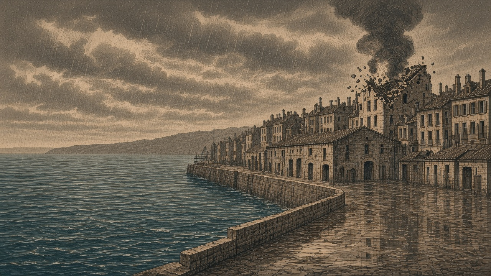

ネルヴェナ、最後の100人全員死亡
潮見玄吾議長「百烈士」を顕彰
フィルノアを狙った艦砲、隣町に着弾 領有は黒潮のまま

【総合部】カペレナ王国の戦艦と巡洋艦が、黒潮自治国のフィルノアへ艦砲を向けた。着弾したのは隣町ネルヴェナ。最後まで故郷にとどまっていた住民100人が全員死亡し、人口は0となった。黒潮自治評議会の潮見玄吾議長は犠牲者を「ネルヴェナ百烈士」と呼んで顕彰し、国民に追悼声明を発した。町の名と黒潮の旗は残ったが、そこで暮らす人々は失われた。
潮見議長「百人の忠魂、永久に忘れず」
潮見議長は追悼声明で「ネルヴェナの忠勇なる国民百名は、敵艦の砲火を前にしてなお故郷を捨てず、最後の一人に至るまでその地に踏みとどまった」と述べ、全員を「ネルヴェナ百烈士」と称した。
「彼らは兵士ではない。家を守り、店を守り、祖国の土地に生きた我らの同胞である。その百の命を奪った砲火を、我々は決して忘れない。百烈士よ、安らかに眠れ。黒潮の旗あるところ、諸君の名は永久に語り継がれる」と訴え、町の再建を誓った。
第129期、同じ議長は首都の評議会前で「私はここにいる。評議会も首都を離れていない。失った土地は必ず取り戻す」と徹底抗戦を唱えた。その演説には、戦争拡大や食料配給の遅れを責める住民の怒号も飛んだ。今度は領土を取り戻す誓いに加えて、帰ることのない百人の命に応える責任を負う。
雨の町に、最後まで消えなかった灯
ネルヴェナは雨だった。荷を覆うシートから水が滴り、岸壁の店の戸は閉じられたまま。第131期にも艦砲で200人が亡くなったこの町に、なお百人がとどまった。港で商いを続けた者、家を離れようとしなかった者。それぞれが守ろうとした暮らしは、今回の砲撃で断ち切られた。
「ここで商売を始めて、ずいぶん経つ。今さら別の町へ行って何をするんだ」。かつて岸壁の商人はそう語ったという。今、その店先を訪ねる住民はいない。町に残った百人は誰一人、生きて朝を迎えなかった。
砲口はフィルノア、砲弾はネルヴェナへ
王国艦隊が狙ったのはフィルノアだったが、着弾したのはネルヴェナで、フィルノア市街への今期の命中はなかった。フィルノアでは第128・129期に各200人、第131期に400人が艦砲射撃で死亡している。黒潮の沿岸都市では、戦火にさらされる日々が続く。
砲手が標的に定めた町と、百人が亡くなった町は違う。海上から放たれた砲弾は、ネルヴェナに残されていた最後の暮らしを奪った。
無人の町、なお開拓の鍬
今期、ネルヴェナでは平地の開拓も行われた。住民を失った町の傍らで、黒潮の人々が土地を拓いたのである。議長が誓った再建の日は遠い。艦砲の届く岸辺へ再び家々を建て、人を迎えられるのか。無人の通りに残る雨音が、その問いを重くする。
黒潮、陸戦で反撃も兵站失う
カペレナ王国は「黒潮臨時首都の防衛軍壊滅、北部既に8割制圧、抵抗軍は計画都市に疎開か」と声明を出している。しかし黒潮の首都はいまも黒潮領にあり、ネルヴェナの領有も変わっていない。
陸上の戦果はカペレナ1,100人、黒潮1,200人。累計は144,900人、95,500人となった。一方、黒潮の兵站基地がカペレナ領となり、予備兵1,000人が王国側の手に渡った。中立だった山も王国領となった。陸と海の詳報は2面。
なのです、残党兵站を再び占領
なのです主義人民共和国は旧シンジケート連邦政府残党の兵站基地を占領し、予備兵1,000人を奪った。今期の戦果はなのです軍1,800人、残党軍400人。首都プライムは残党が保持している。3面で詳報。
なのです、世界初の究極繁栄賞
なのです主義人民共和国の人口は1,008,000人となり、究極繁栄賞を受けた。電都では祝賀の声が上がる一方、国内の町では火災の犠牲者も出ている。4面。
大火で29,200人死亡
なのです主義人民共和国で14,300人、チェス＝シロバキア共和国で14,900人が火災によって死亡した。仕事を求めて移住した人々はこの数に含まれない。5面。
黒潮、オリョルッルに宣戦 潮見議長「真の正義のために戦う」
黒潮自治国は今期、オリョルッル王国に宣戦を布告した。開戦は第137期の予定。カペレナ王国との戦争で都市の住民と兵站拠点を失い、兵力・物資ともに厳しい黒潮が、新たな敵を迎える決断に踏み切った。王国は緑丘公国の軍港を領有し、青海共和国との第136期開戦も控えている。詳報は6面。
黒潮自治評議会の潮見玄吾議長は宣戦に際し、百烈士への追悼とは別に声明を発した。「我が国は領土を失い、軍は傷つき、ネルヴェナの百名までもが帰らぬ人となった。勝算ばかりを数えるならば、今こそ沈黙すべき時であろう。だが、我々は沈黙しない。侵略者が力をもって国々の運命を決めようとする時、これに抗う者がいなければ、正義は地図の上から消えてしまう」と述べた。
さらに「黒潮は、真の正義のために侵略者と戦う。たとえ国土が狭まり、最後の一兵となろうとも、強き者の恣意が法となる世界を認めない。ネルヴェナ百烈士の無念を胸に、我々はなお立つ」と訴えた。
第129期の議長演説では徹底抗戦の訴えに、配給の遅れや戦争拡大を批判する怒号が交じった。新たな宣戦がその不満を静めるかは不透明だ。国民を奮い立たせる議長の言葉とは裏腹に、黒潮の守備隊には失った兵站と住民の命が重くのしかかる。
ネルヴェナの最後の百人は全員が死亡した。故郷を捨てずに生きた人々の最期を、本紙は深い悲しみをもって悼む。潮見玄吾議長は彼らを「百烈士」と呼んだ。その忠誠は記憶されるべきだ。だが、百人が死なねばならなかったことまで栄誉に変えてはならない。
カペレナ王国は北部制圧を唱える。だが、狙った都市の隣で最後の住民を死なせた砲撃に、誇るべき勝利はあるまい。民間人の命を奪う砲火を本紙は厳しく非難する。
潮見議長が「真の正義のために侵略者と戦う」と叫んだことには、追い詰められてなお屈しない国の悲壮がにじむ。軍港を失った緑丘、次なる戦争を控えた青海を前に、強国の膨張を黙認しないという主張には一理ある。だが、その旗を掲げる黒潮自身が今、都市を守りきれず、兵站を奪われている。カペレナとの戦争さなかに新たな宣戦を重ねる政治判断は、勇気と同じ重さで危険を引き受けるものだ。
第129期、潮見議長は「失った土地は必ず取り戻す」と誓った。ならば取り戻すべきは土地だけではない。住民が安心して帰れる暮らしである。侵略への抵抗という大義を掲げる以上、国民を犠牲にし続ける戦いへ転じてはならない。開拓者を再び同じ砲火にさらしてはならない。
国民が祖国のために死ぬことより、祖国で生きられることにこそ国家の尊厳はある。百人の死を悼むなら、次の百人を守れ。ネルヴェナ百烈士の悲劇を、最後の悲劇とせよ。